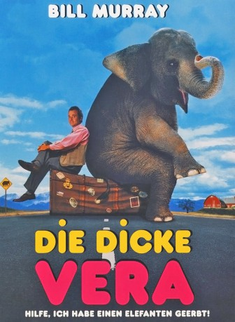
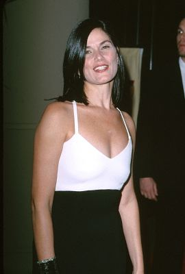

#7188 Die Dicke Vera
Alternativ: Larger Than Life
 
 IMDB-Wertung: 5.6 / 10
IMDB-Wertung: 5.6 / 10  Metascore: 0
Metascore: 0 
Der erfolgreiche Motivationstrainer Jack erbt von seinem Vater, einem Zirkusclown, eine Elefantendame namens Vera. Er ist mehr als überrascht, als er feststellt, dass ihn seine Mutter jahrelang belogen hat, indem sie erzählte, sein Vater sei schon lange tot. Und der nächste Schreck lässt nicht lange auf sich warten: Der Notar erklärt ihm, das er 35.000 Dollar Sachschaden zu bezahlen hat, den der Elefant mittlerweile angerichtet hat. Jack will den Elefanten auf jeden Fall loswerden und sieht zwei Möglichkeiten: Terri, eine Tiertrainerin aus Hollywood, und Mo, die Elefanten nach Sri Lanka auswildert. Beide sind bereit, Vera aufzunehmen, doch für beide Möglichkeiten muss Jack mit dem Elefanten von der Ost- an die Westküste reisen.
Jahr: 1996
Dauer: 89 Minuten
FSK: 0
Land: USA Studio: MGM/UA Distribution CompanyTonspuren: DD2.0 - ,
Untertitel:
Auflösung: 1080p (1920x1040) Größe: 4014 MB
Genre: Komödie, Familie
Regisseur: Howard Franklin
Drehbuch: Roy Blount Jr.
Soundtrack:
Darsteller:
 Jerry Adler als Event Coordinator
Jerry Adler als Event Coordinator Bill Murray als Jack Corcoran
Bill Murray als Jack Corcoran- Anita Gillette als Mom
 Maureen Mueller als Celeste
Maureen Mueller als Celeste Jeremy Piven als Walter
Jeremy Piven als Walter- Carrie Houk als Receptionist
 Harve Presnell als Trowbridge Bowers
Harve Presnell als Trowbridge Bowers Earl Billings als Cop
Earl Billings als Cop Tracey Walter als Wee St. Francis
Tracey Walter als Wee St. Francis Greg Lewis als Junkyard Guy
Greg Lewis als Junkyard Guy Janeane Garofalo als Mo
Janeane Garofalo als Mo Pat Hingle als Vernon
Pat Hingle als Vernon Keith David als Hurst
Keith David als Hurst Lois Smith als Luluna
Lois Smith als Luluna- Darrel Bowen als Bearded Trucker
-  Linda Fiorentino als Terry Bonura
- Neal Lerner als Makeup Person
 Matthew McConaughey als Tip Tucker
Matthew McConaughey als Tip Tucker- Margaret Smith als Colorado State Patrol Officer
- Hector Elias als Local Artisan
 Jesse D. Goins als Airport Guard
Jesse D. Goins als Airport Guard Christopher Darga als Airport Security Head
Christopher Darga als Airport Security Head Dirk Blocker als Airport Security Man
Dirk Blocker als Airport Security Man- Bob Bouchard als Circus Performer - Clowns
- Mark Chadwick als Circus Stilt Walker
- Tony Snegoff als Circus Web Setter
- Clark Tucker als Circus Web Setter
- Jennifer Caputo als Circus Performer - Web Girls
- Darlene Ava Williams als Circus Performer - Web Girls
- Deon Aumaier als Circus Performer - Jugglers
- Belinda Stewart-Wilson als Fake Linda , uncredited
- Richard Alan Baker als Richie
- Richie Allan als Man in Audience
- Kimberly Thornton als Pyramid Woman
- Alex Neiwerth als Matthew
- Alfa-Betty Olsen als Party Guest
- Tai als Vera
- Jeannine Hutchings als Outraged Woman
- Roy Blount Jr. als Heckler #1
- Teddy Couch als Boy with Ice Cream
- Craig Hawksley als Hecklers
- Norman McGowan als Heckler
- Morgan Hatch als Heckler
- Joseph Ribaudo als Heckler
- David Mitchell als Heckler
- Marco Emerson als Boy on Bicycle
- Phyllis Shulman als Waitress
- Harry Governick als Ticket Man
- Rodney Bennett als Incredulous Trucker
- Greg Ward als Truckyard Guy
Datei: X:\1996\Dicke Vera, Die (1996, FSK0, 1920x1040).mkv seit 04.10.2017
Festplatte: HD 1996-2002
 Es gibt insgesamt 78 Filme in der Gruppe '1996'
Es gibt insgesamt 78 Filme in der Gruppe '1996'